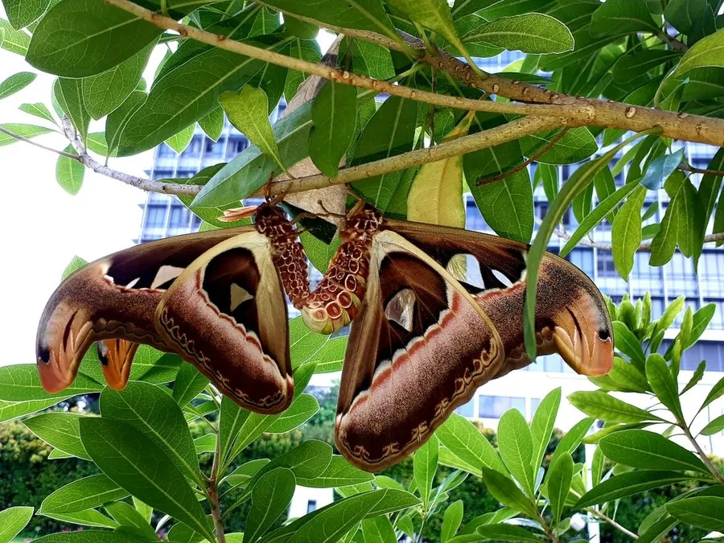

昆虫 · 动物界
乌桕大蚕蛾 Attacus atlas

翅展可达 30 cm 的世界最大蛾类之一，前翅端部有蛇头状斑纹，成虫口器退化，不取食只繁殖。
- 分类
- 门节肢动物门纲昆虫纲目鳞翅目科大蚕蛾科属大蚕蛾属
- 栖息环境
- 热带和亚热带森林、林缘与果园，寄主植物附近
- 地理分布
- 中国南方、东南亚、印度至印度尼西亚的热带亚热带地区
- 保护级别
- 暂无评估
物种志
乌桕大蚕蛾翅展约 25–30 cm，雌蛾比雄蛾更大，是翅面积最大的蛾类之一。翅面红褐至橙褐色，布满白色波纹和半透明窗斑，前翅端部向外突出，形似蛇头，翅缘呈波浪状，整体像一片枯叶。
幼虫取食乌桕、樟树、柑橘、番石榴等多种植物的叶片，幼虫期约 1–2 个月，老熟后吐丝结成大型茧。成虫羽化后口器退化，不再进食，只靠幼虫期积累的营养存活，寿命仅约 1–2 周，唯一任务是交配产卵。它在印度阿萨姆等地曾被半野生饲养，用于抽取蚕丝。乌桕大蚕蛾分布于中国南方、东南亚、印度次大陆和印度尼西亚的热带亚热带森林，前翅端部的蛇头斑纹被认为可以吓退天敌，它也是夜间观察和生态摄影的热门对象。
形态与习性
- 食性幼虫取食乌桕、樟、柑橘等叶片；成虫不取食
- 翅展约 25–30 cm，雌蛾略大
- 寿命成虫约 1–2 周，幼虫期约 1–2 个月
- 繁殖雌蛾释放性信息素吸引雄蛾交配
- 蚕丝茧可缫丝，印度有半野生饲养传统
- 拟态前翅端部的蛇头状斑纹可吓退天敌
趣味知识
- 乌桕大蚕蛾是全球翅面积最大的蛾类之一，翅展可达 30 cm。
- 成虫口器退化，羽化后不再进食，只能存活一到两周。
- 它前翅端部的蛇头斑纹被认为能吓退鸟类等天敌。